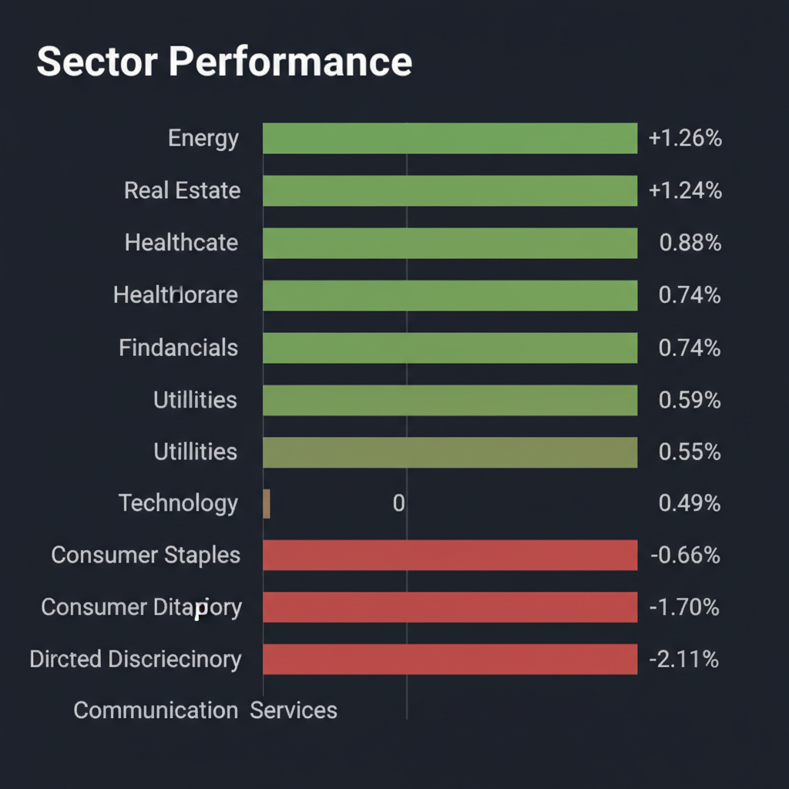
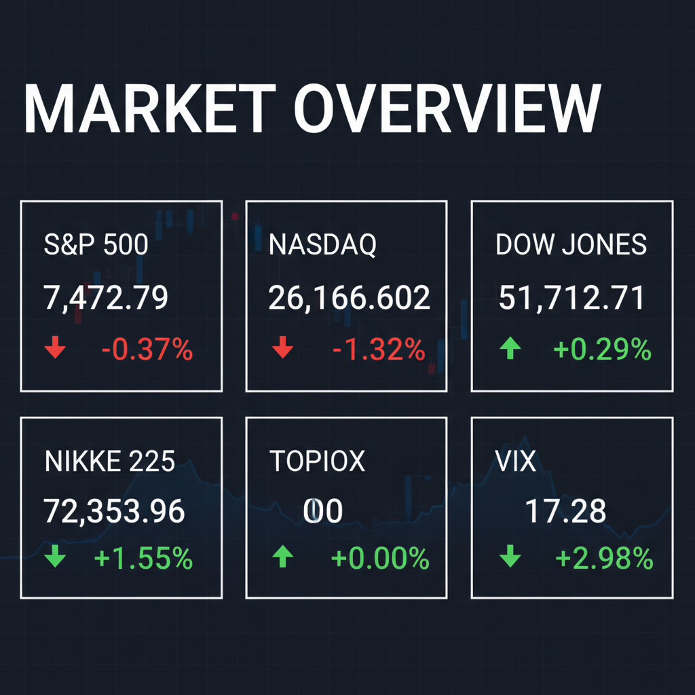

投資チームミーティングの結論に基づき、投資家向け最終レポートを作成いたします。
各エージェントがWeb調査結果を踏まえて独立に10段階評価した結果です。平均7以上=強気、4〜6.9=中立、4未満=弱気。
| 銘柄 | ファンダメンタルズアナリスト | テンバガーハンター | マクロエコノミスト | テクニカルストラテジスト | リスクマネージャー | 平均 | 判定 |
| 6027.T | 7 クラウドサイン成長と自社株買いで堅調 | 7 クラウドサイン独占、自社株買いも後押し | 7 クラウドサイン成長、自社株買いも後押し | 8 クラウドサインの独占的地位と株主還元強化 | 8 クラウドサイン強固、自社株買いで下値支持 |
7.4 | 強気 |
| LNKX | 5 成長性あるが財務リスクと株価安定性見極め必要 | 3 成長性高いが財務リスク不明瞭 | 3 上場直後、財務リスク未確定 | 3 成長性あるも財務リスクとIPO直後の不安定さ | 3 成長性高いが財務リスクとIPO直後の不安定さ |
3.4 | 弱気 |
| 3472.T | 4 増資による分配金減、金利上昇リスク懸念 | 2 金利上昇リスク、分配金減少懸念 | 2 減配懸念、金利上昇リスク直撃 | 3 減配見通しと金利上昇リスクで魅力低下 | 2 分配金減配懸念、金利上昇リスクで弱気 |
2.6 | 弱気 |
| 198A.T | 2 業績悪化と低迷チャート、M&A効果不透明 | 1 赤字継続で投資妙味なし | 1 業績悪化、期待先行のM&A | 1 主力事業不振、業績回復見込み立たず | 1 主力事業赤字、M&Aは不透明で下落トレンド |
1.2 | 弱気 |
エージェントが推奨した中小型株について、Google検索で最新情報を調査した結果です。
LNKX（LiNKX）に関する投資判断に必要な最新情報は以下の通りです。
事業内容: 同社は主に銀行などの金融機関向けに、勘定系システム、APIゲートウェイ、データ基盤といったシステム開発支援を手がけるモダナイゼーション事業を展開しています。特に、難易度の高いAPIゲートウェイシステム開発や勘定系システム開発に注力しており、高度な専門性を持つソフトウェアエンジニア集団を強みとしています。全従業員の8割超がソフトウェアエンジニアで占められ、その半数以上が欧米やアジアなどの海外出身者で構成されており、クラウドネイティブかつAI駆動開発を積極的に推進しています。 また、製薬会社をはじめ研究者向けの生産性向上を支援する「LabHub」や、社会貢献事業として視覚障がい者向けナビゲーションシステム「shikAI」も提供しています。
時価総額: 新規上場したばかりのため、時価総額は変動する可能性があります。公開価格は790円でした。
業界でのポジション: 金融機関のレガシーシステムを最新プラットフォームへ移行する「モダナイゼーション」において、特にAPIゲートウェイ、データ基盤、勘定系システム開発に強みを持つ専門的なポジションを確立しています。
* 2025年6月期（実績）: * 売上高: 13.74億円（前年比 +66.0%） * 営業利益: 3.36億円 * 経常利益: 3.36億円 * 純利益: 2.27億円 * 2026年3月31日時点（第3四半期累計）: * 売上高: 4.99億円 * 純利益: 8371.30万円 * 売上総利益: 2.61億円 * 営業利益: 1.35億円
売上高は前年比で大幅な成長を遂げています。
銘柄: 198A.T (PostPrime株式会社) に関する投資判断に必要な最新情報は以下の通りです。
1. 企業概要 PostPrime株式会社は、金融・経済情報プラットフォーム事業を主力とし、SNS「PostPrime」の運営や取引プラットフォーム事業を展開しています。2024年6月にはAIを活用したチャート分析機能「IZANAVI」を発表しています。また、2026年6月17日にはインフィニティライフの株式取得（完全子会社化）を発表し、事業承継・M&A仲介領域へ参入しました。 時価総額は2026年6月22日時点で約17.6億円です。 業界でのポジションとしては、情報・通信業において、時価総額順位で617社中578位となっています。
2. 直近の業績・決算情報 2026年5月期第3四半期連結決算では、主力事業の不振により売上高が前年同期比33.9％減の4.52億円、営業損失1.88億円を計上しました。 2026年5月期の通期連結業績予想は、売上高5.97億円（前期比33.4％減）、営業損失3.16億円、経常損失2.94億円、親会社株主に帰属する当期純損失3.22億円を見込んでおり、新規事業の立ち上がりも遅れ、減収・赤字が予想されています。 過去3年間の平均成長率を見ると、売上高成長率は11.67%、純利益成長率は-24.24%です。
3. 最新ニュース・材料（直近1-2週間の重要なニュース） 2026年6月17日、同社はインフィニティライフの株式取得（完全子会社化）を発表し、事業承継・M&A仲介領域へ参入することを公表しました。この発表により、同日の株価は13.18%上昇し、出来高も前日比5,550%と急増しました。
4. アナリスト評価・目標株価 具体的なアナリストによる目標株価やコンセンサスは確認できませんでした。一部のデータでは、理論株価（はっしゃん式理論株価、2026年1月14日時点）が61円と算出され、「超割高」と評価されていますが、これは個人投資家独自のモデルによるものです。 2026年4月28日時点のPER（予想）は－倍、PBR（実績）は2.15倍です。
5. リスク要因 主力事業の不振に加え、新規事業の立ち上がりが遅れていることが業績回復への課題となっています。 情報・通信業における市場競争も激しいことが示唆されます（業界内での時価総額順位が低い）。 財務面では、自己資本比率は79.4%と健全性を維持しているものの、継続的な赤字予想が財務上の懸念材料となる可能性があります。
6. 株価の最近の動き 2026年6月17日にはM&A仲介参入の発表を受け、株価は13.18%上昇し、出来高が急増しました。 しかし、直近のトレンドとしては、過去1ヶ月で-6.54%、過去6ヶ月で-20.99%、年初来では-16.37%、過去1年では-82.43%と下落傾向にあります。 年初来高値は2026年1月20日の395円、年初来安値は2026年6月16日または17日の129円です。
弁護士ドットコム（6027.T）の投資判断に必要な最新情報は以下の通りです。
1. 企業概要 弁護士ドットコム株式会社は、法律相談ポータルサイト「弁護士ドットコム」および税務相談ポータルサイト「税理士ドットコム」の運営を主軸とするメディア事業と、クラウド型電子契約サービス「クラウドサイン」を提供するIT・ソリューション事業を展開しています。特に「クラウドサイン」は国内最大手であり、登録弁護士数は2.8万人で日本の弁護士の約60%を占めています。 時価総額は2026年6月22日時点で502億円です。業界ではサービス業に属し、サービス業555社中87位に位置しています。
2. 直近の業績・決算情報 2026年5月13日に発表された2026年3月期の通期決算では、以下の実績を記録しました。 * 売上高：16,288百万円（前期比15.7%増） * 営業利益：2,204百万円（前期比58.7%増） * 経常利益：2,197百万円（前期比56.4%増） * 純利益：1,510百万円（前期比43.9%増） 過去12四半期において業績は改善傾向にあり、売上高と利益率が前年同期比で伸びています。
3. 最新ニュース・材料 直近では、2026年6月20日に上限35万株の自社株買いの実施を発表しました。また、2026年6月11日には、自社株買いに関する事項の決定および代表取締役社長による継続的な株式取得に関するお知らせを公表しています。
4. アナリスト評価・目標株価 2026年6月19日時点の最新のアナリスト評価では「買い」のレーティングが付与されています。証券アナリストによる最新の予想株価は1年後で3,900円、目標株価コンセンサスは4,100円とされています。一方で、日系中堅証券がレーティングを「中立」に引き下げ、目標株価を2,800円としたという情報も2026年6月19日に更新されています。
5. リスク要因 * 競合: 法律相談ポータルサイトや電子契約サービス市場への競合他社の参入により、競争が激化し、事業展開や業績に影響を及ぼす可能性があります。特に「クラウドサイン」は国内最大手ですが、企業ユーザーの支持を失ったり、競合他社が支持を得たりした場合には影響が出ることが考えられます。 * 規制: インターネット利用に関する新たな規制や予期せぬ要因により、インターネット利用環境が悪化した場合、事業展開や業績に影響を与える可能性があります。 * 財務上の懸念: 広告宣伝投資の拡大計画において、投下費用に対して売上が想定通り伸びない場合、販管費比率や採算性が変動するリスクがあります。また、サイト運営者として不適切な投稿への対応が不十分だった場合、信頼を失う可能性もあります。
6. 株価の最近の動き 弁護士ドットコムの株価は、2026年6月19日終値で2,236円でした。直近のトレンドとしては、2026年1月15日に年初来高値3,490円を記録しましたが、2026年6月15日には年初来安値2,080円を付けています。2026年6月16日から6月22日の期間では約-1.80%下落しており、安値圏での値固めが続いている状況です。しかし、2026年6月19日には自社株買いの発表を受け、5日ぶりに反発しました。
時価総額は2026年6月22日時点で274億円です。